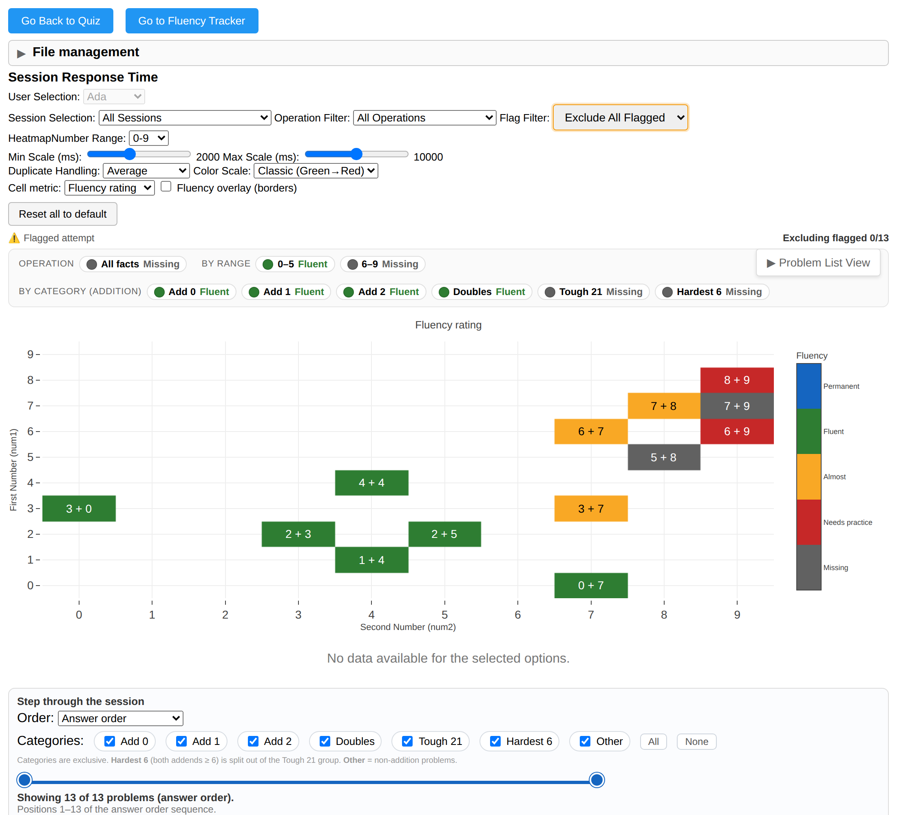
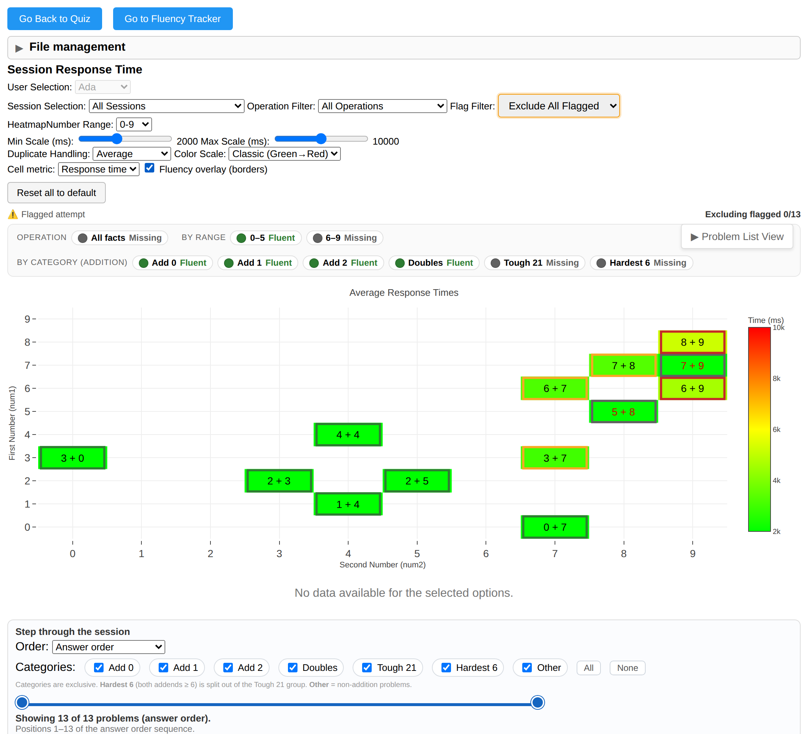
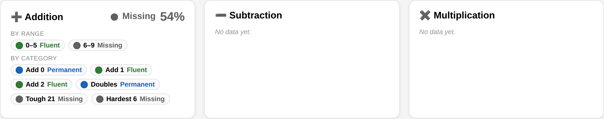

Math Quiz — Fluency: flow, current state & proposals
The fluency companion to the compare report. This round it
gained a Flow section (how the app is used, and the two roles), and two of its proposals were built:
the integrated fluency view on the analysis page and the roll-up overview on the tracker. The previous
version is preserved at fluency_v1.html.
★ Overview & TL;DR
- Flow (new, §1). Two roles — the learner takes quizzes; the parent/teacher/admin sets up, reads fluency, and steers the next quiz. The loop is quiz → evaluate → next quiz → (review) → repeat.
- Model (§2). red → yellow → green → blue, at three levels (operation / category / problem). Roll-ups use a minimum / worst-of rule.
- Analysis fluency view built (§5). A metric toggle (response time ⇄ fluency rating), a fluency overlay (response-time fill + rating borders, to see both), and a category roll-up strip.
- Tracker overview built (§6). The high-level landing dashboard: per operation, the operation / 0–5·6–9 / category roll-ups across addition, subtraction, multiplication.
- Shared engine. The rubric moved into
fluency_core.js— one evaluator for the tracker, the analysis view, and the engine. Fluency is still not persisted (recomputed; §4).
1 Flow & roles
How the app is used right now, with two kids at home. Other use cases are on the roadmap (§8) but deliberately out of scope here — the point of this section is to get the interaction flow right.
The two roles
Right now there are exactly two roles. (More — e.g. self-serve learners, classroom cohorts — come later.)
🧒 Learner (student / kid)
- Takes the quiz. One operation at a time, keypad entry, answer as fast as they can.
- Goes as long as they can before frustration — older kids do more (K2 ~40–50; Kid1 ~88).
- Every attempt (problem, answer, correctness, time, flags) lands in their per-user file.
- That’s it — the learner doesn’t configure anything; they just demonstrate what they know.
👩🏫 Parent / teacher / admin (the operator)
- Sets up the session: which operation, and easy-first vs hard-first.
- Reads fluency — the overview dashboard + the analysis grid — to see where the learner is.
- Steers the next quiz: accept a recommendation or adjust it (shorter vs longer).
- Can manually override a rating when warranted — but prefers to let the data decide.
Current-mode flow — the first session and the cycle
1 First session ever — pick one operation + a start order
Start with a single operation. Choose the generation mode — today that’s auto mode (roadmap: pre-selected lists, or simply “easy” / “hard”). Then choose the start order:
- Hard-first — when you think they’re fluent, or you’re demoing for an adult (the original anchor case).
- Easy-first — for an early learner who may not know all the single-digit facts yet (what we did for K2).
Let the learner go as long as they can. The first run already yields a useful first read.
2 Initial evaluation
An early determination of fluency from that first test — enough to see the rough shape (which categories / ranges are solid vs missing).
3 Follow-up quizzes — collect more, append to the file
Run more sessions; each appends to the learner’s file so the picture sharpens and durability (green → blue) can be judged across sessions.
4 Recommended next quiz — the operator adjusts (more or less involvement)
The operator can be hands-on or hands-off. They get a recommended next quiz and can tweak it. Today it’s bucketed into a quicker next quiz and a longer next quiz — so each learner file stores a short and a long ready-to-run list. (K2 already has a 20-problem and a 40-problem list.)
5 Fluency analysis — on demand / after N / end of session
The automated fluency evaluation should run on demand, automatically after a set number of questions, and/or automatically at the end of each session, so the evaluation stored in the file always reflects the latest responses + session data. (Today the rating is recomputed on view; wiring it to those triggers is a build item — §7.)
6 Manual override — sparingly
The operator can manually set a rating — e.g. if you started hard and barely covered 0–5, set 0–5 addition to blue (“in ice — they know it”). Avoid this as much as possible; prefer to let the evidence decide.
The repeating cycle
Each turn of the loop adds data, re-evaluates fluency, and proposes the next problems. Over repeated cycles the learner moves category-by-category from red toward blue across addition, then subtraction, then multiplication.
2 The fluency model
Reproduced from the compare report’s §5. Canonical version: SPEC.md §2–§5.
The rubric: red → yellow → green → blue
| Status | Meaning | Signature |
|---|---|---|
| red | Really doesn’t know it. | Errors, or so effortful it’s effectively unknown. Below the accuracy floor ⇒ red. |
| yellow | Kind of knows it — not fluent. | Accurate but slow/effortful. Needs practice. |
| green | Fluent / near-fluent. | Fast + correct recently; not yet permanent. |
| blue | Permanent — “in ice.” | Green sustained across sessions; known cold. |
Three levels + the roll-up rule
The same rubric rolls up and drills down: operation → category → problem. The two intermediate levels this app uses are the broad 0–5 vs 6–9 split and the categories (Add Zero, Add One, Add Two, Doubles, Tough 21, Hardest Six). A group’s rating is the worst (minimum) of its facts: blue only if every fact is blue; one green makes it green; any yellow → yellow; any red → red; any gray/missing → gray.
// the roll-up rule (fluency_core.js) const FLUENCY_SEVERITY = ['blue','green','yellow','red','gray']; // best → worst function fluencyRollupStatus(statuses){ /* return the WORST present; ignore nodata */ }
3 What the fluency tracker did before this round
The page is math_fluency.html + math_fluency.js. It is functional and tested,
built on the old JSON store, evaluating per problem. Screenshots are live from a seeded multi-session history.


Seams that motivated the work below: built on the retired JSON store; no category level;
blue invisible on the grid; logic was page-bound (now shared via fluency_core.js).
4 Is fluency in the SQLite schema yet?
Still no. The store holds only raw attempts; fluency is recomputed on every view.
engine/db_io.mjs states it and stubs the future table:
RAW_TABLES = ['Users','Sessions','ProblemAttempts','ModeEvents'],
EVALUATION_TABLES = ['FluencySnapshots'] (“not created yet”). No status / category / durability columns.
FluencySnapshots cache would make
cross-session durability (green→blue) robust across cloud/local — §7.
5 Analysis fluency view built
The granular level of fluency, exactly where it belongs: on the analysis page’s per-fact grid. Flip a switch and the same grid that shows response times shows the fluency rating for every problem.


What shipped
- Cell-metric toggle:
Response time⇄Fluency rating(discrete 5-band colorscale + status colorbar). Per-cell rating from the in-scope attempts, range-clipped, recency-windowed. - Fluency overlay checkbox — rating borders over the response-time fill (the user’s “see both” idea).
- Category roll-up strip — operation / 0–5·6–9 / category, min rule, with count breakdowns on hover.
- New controls persist + reset with the rest; click-to-focus, the problem list, and the stepper still work.
6 Fluency tracker overhaul — overview dashboard phase 1 built
When you want to zoom out from the granular analysis grid, you come to the tracker and see where the learner is on their journey across addition, subtraction, and multiplication. That landing dashboard now exists.

Built now
- The three-level roll-up the operator asked for: operation → 0–5/6–9 → categories, all three operations,
via the shared min rule. Blue shows here (cross-session permanence from
fluencyDatasets). - It’s the page’s landing view; the existing per-operation detail sections remain below as the drill-down.
Still to do on the tracker (next phases)
- Move it off the JSON store onto the per-user
.sqlite(sharedengine/sqlite_io.mjs), so the tracker and analysis read the same file. - Render blue on the per-fact grid (not just as a count) and drill operation → category → problem in place.
- Level-appropriate thresholds (developing ~3.5–4 s) per the G1/G2 finding.
- Then the problem-generation + next-quiz surface (separate phase — §8).
7 Coding status
Each step lands independently with tests green (cd apps/math-quiz/tests && npm run test:all;
node --test is 125/125 this round).
done Shared fluency engine
Rubric + roll-up helpers extracted to fluency_core.js (one source for tracker, analysis,
engine). Behavior-preserving; tests updated.
done Roll-up helpers
fluencyRollupStatus (min/worst-of), additionCategoryOf,
easyHardBucket, status breakdown — unit-tested.
done Analysis metric toggle + overlay + roll-up strip
Proposal A (§5). Per-cell rating + category strip; covered by
math_analysis_page.test.mjs and a capture script.
done Tracker overview dashboard
Proposal B phase 1 (§6).
next Reconcile status names with canon (SPEC §3)
Decide gray’s fate (fold low-accuracy into red vs keep “missing” as an explicit sub-state); make
greenMs/redMs/minAccuracy level presets.
next Tracker onto the SQLite store + blue-on-grid + drill-down
Repoint to engine/sqlite_io.mjs; unify permanence into the shared engine so the analysis
view can show blue too.
next Run-analysis triggers + optional FluencySnapshots
Recompute on demand / after N / at session end (flow §1.5); optional snapshot cache for durability.
later Problem generation + next-quiz surface
The generation/selection engine (§8) — its own phase, once the read/flow surfaces feel right.
8 Roadmap — problem generation & next-quiz
Deliberately deferred so the flow (how the tool informs the operator) settles first. Captured here so it isn’t lost.
- Auto-generate the next lists from current status + response times — producing the short and long next-quiz lists stored in the learner file (today these are hand-made; K2 has a 20 and a 40).
- Quiz-creation-time spec — e.g. “40 questions, 50/50 proximal-zone + already-fluent,” or 80/20; difficulty and time budget as dials.
- Variable-length / “keep going” mode — you can already quit-and-save early; add the inverse: extend a run as if more questions were configured, without restarting.
- Anchor auto-generation (the fluent-user / demo path) already exists and remains available; SQLite already stores problem lists inside the learner file.
- Other use cases (self-serve learners, classroom cohorts, richer roles) — later; not this mode.
★ Change log
| Date | Who | Change |
|---|---|---|
| 2026-06-20 | cloud agent | Snapshotted v1 → fluency_v1.html. Extracted fluency_core.js (shared
rubric + roll-ups). Built the analysis fluency view (metric toggle + overlay + category roll-up, min
rule) and the tracker overview dashboard (operation / 0–5·6–9 / category). Rewrote this report with a
Flow & roles section and a roadmap; added live screenshots of both new surfaces. |
| 2026-06-20 | cloud agent | First version (now fluency_v1.html): fluency model,
current-tracker docs, SQLite data-model status, and the initial proposals. |